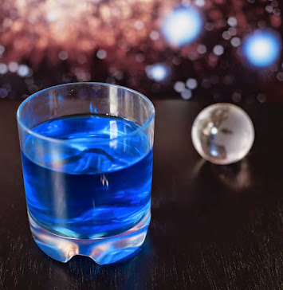

Romulan Ale
Banned by the Federation, this blue death looks like drain cleaner and probbly tastes worse. Only use for "medicinal purposes".
Ingredients:
- 2 ounces Navy Strength Gin
- 3/4 ounce Blue Curaçao
- 4 to 6 drops Grapefruit Bitters
- 2 to 3 ounces Ginger Beer or Dry Ginger Ale, chilled
Directions:
- Add the gin, blue curacao, and bitters to the serving glass and stir to combine.
- Add ice to the serving glass until it's 2/3 full, or to taste.
- Top with chilled ginger beer to fill.
- Give it a very brief stir to combine, if necessary.
- Prepare for diplomatic consequences.